ComfyUI
Text to image
SamplerLCM 1.10 to 0.90, 6 steps, a blank 32 x 32 picture for step 1.
ComfyUI
Text to image
SamplerLCM 1.10 to 0.90, 6 steps, a blank 32 x 32 picture for step 1.
MiniMax H3 Image without the crunch
PixlStash · pixlstash.dev/minimax-h3-image.html
Workflows
Standard ComfyUI (stock nodes only)
ComfyUI
Text to image
SamplerLCM 1.10 to 0.90, 6 steps, a blank 32 x 32 picture for step 1.
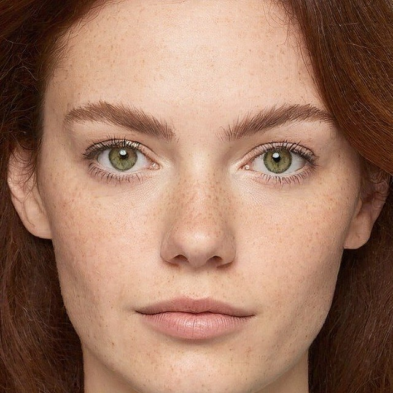
ComfyUI Keep a seed Euler for 1 step, then LCM for 5: keeps a seed's person.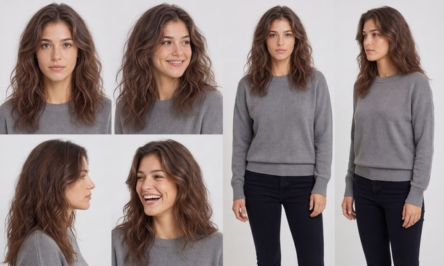
ComfyUI Sheet from reference A character sheet of the person in a reference picture.Stock nodes
Only nodes that ship with ComfyUI. Model files below.
PixlStash nodes (loads models through PixlStash)
 ComfyUI
Text to image
LCM with the blank picture for step 1, through PixlStash's loaders.
ComfyUI
Text to image
LCM with the blank picture for step 1, through PixlStash's loaders.
 ComfyUI
Character sheet
LCM character sheet with PixlStash's sheet prompt.
ComfyUI
Character sheet
LCM character sheet with PixlStash's sheet prompt.
 ComfyUI
Sheet from reference
A character sheet drawn from a reference picture.
ComfyUI
Sheet from reference
A character sheet drawn from a reference picture.
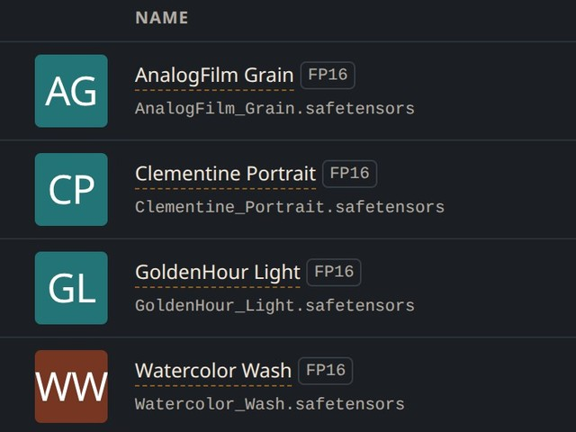
PixlStash nodes
Loads models from the PixlStash shelf; comes with the desktop app.
Model files, the official ones as in ComfyUI's own template:
ComfyUI's official MiniMax H3 Image template gives crunchy, over-sharpened skin. Two stock-node changes fix it, and the prompt fixes the rest.
These tests were made to set good defaults for PixlStash's MiniMax H3 Image workflows. A workflow PixlStash ships has to give a good picture to anyone who presses Run, so it starts from sensible plug-and-play defaults, with the choices that matter most as options in the Run popup. A custom workflow, in ComfyUI or in PixlStash, which runs any ComfyUI workflow, can make other trade-offs for the job at hand. That is why the tests are shared: they show what each choice does, so you can make your own. They build on community work, credited at the end.
The fix
| Change | Effect | Use for |
|---|---|---|
SamplerLCM: s_noise 1.10 to 0.90, simple scheduler, 6 steps, CFG 1 |
Most of the crunch gone | Everything |
A blank 32 x 32 EmptyImage into image_1, no VAE, for step 1 only: ConditioningSetTimestepRange 0 to 0.1, a text-only encoder for the rest |
Less crunch, and most of the variety kept | Text-to-image only |
| Describe camera, light and skin; drop "photorealistic" | Less airbrushed skin | Every prompt |
| Describe grid panels instead of numbering them | No digits drawn into the photos | Sheets and grids |
No help: a 16 MP canvas instead of 4 MP, or an nvfp4 text encoder instead of int8. dpmpp_2m and res_multistep break the picture.
Method
Each comparison changes one thing: same prompt, seed and canvas, with faces compared as 1:1 crops. A rebuilt workflow was first checked to reproduce the original pixel for pixel. Likeness to a reference picture is scored with InsightFace. Most tests are 5280 x 3168 character sheets of three people: a young woman with freckles, a bearded man in his forties and a woman with a black bob. Model files: the official int8 ones.
The official template
Euler, simple scheduler, 6 steps: etched skin, blotchy freckles, wiry hair and oversaturated colour. Neither a 16 MP canvas nor the smaller nvfp4 text encoder (15.7 GB against 27 GB) changed that. The sampler was the cause.
Swapping euler for another stock sampler does not help: dpmpp_2m and res_multistep break the picture completely.
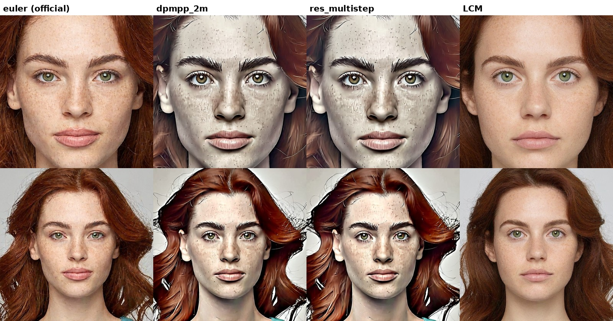
LCM and the blank picture
SamplerLCM removes most of the crunch. The settings come from u/LilBrownBebeShoes's 20MP workflow, which credits Kijai's testing. Less noise than 1.10 to 0.90 turned skin blotchy; more was no better.
The blank picture removes more of it. It comes from Kijai's "text with empty image" mode in ComfyUI-KJNodes. Only text-to-image needs it: edits and reference sheets already have a picture. Kijai's mode shows it for the first 2 of 6 steps, which gives nearly the same picture as all 6. On the sheets, step 1 alone already gave the same look, with slightly less glossy skin.

On the sheets, with the blank picture the unnamed sweater went from saturated teal to muted navy, and skin looked warmer and more natural, for all three people. It also settles the composition, so every sampler draws much the same picture. Its size hardly matters: 32 x 32, 512 x 512 and 1024 x 1024 gave nearly identical pictures.
A caveat. LCM and the blank picture also steer the model toward a safer, more standard look, and the blank picture does so strongly: measured in the next section.


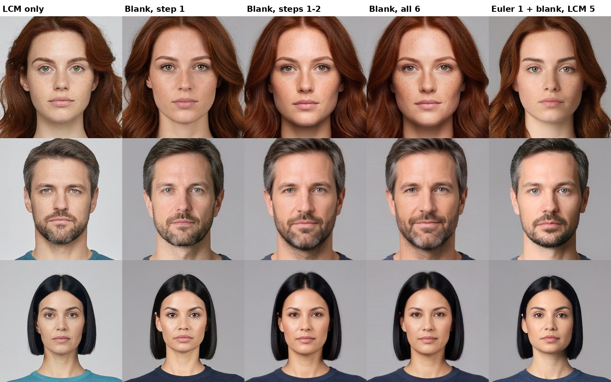
The blank picture narrows the output
The blank picture has a price: kept for all six steps, it pulls every seed toward the same person. To measure that rather than judge it by eye, the test was written down before any picture was made. Three lightly steered prompts ("a red-haired European woman in her mid twenties", "a Southeast Asian man in his fifties", "a Black woman in her forties", each "head and shoulders, looking at the camera"), 12 seeds each, the same seeds for every setup, 1024 x 1024. InsightFace identity similarity between the faces of different seeds measures how alike the seeds come out: higher is narrower.
| Setup | Similarity across seeds | Against LCM only (95% interval) | Variety given back |
|---|---|---|---|
| euler (official) | 0.14 | -0.07 (-0.11 to -0.04) | |
| LCM only | 0.21 | reference | |
| LCM + blank picture, all 6 steps | 0.54 | +0.33 (+0.30 to +0.36) | none |
| LCM + grey blank picture | 0.52 | +0.32 (+0.28 to +0.35) | 4% |
| LCM + blank picture, step 1 only | 0.31 | +0.10 (+0.06 to +0.14) | 69% |
| LCM + blank picture, steps 3 to 6 | 0.46 | +0.25 (+0.21 to +0.28) | 24% |
| LCM + grey picture with faint noise | 0.53 | +0.33 (+0.29 to +0.36) | 1% |
With the blank picture, different seeds draw faces about as alike as face recognition expects of two photos of one person: the same frontal pose, centre parting and symmetrical face. The three different people also drift toward one face. A grey picture does the same, so the colour of the picture does not matter, and faint noise in it changes nothing. LCM alone narrows a little against euler, far less.
The blank picture for step 1 only gives back about 70% of the lost variety. Moving it to steps 3 to 6 gives back only a quarter: with six steps, the face is still being settled after the first two.
And it keeps the skin clean. At the size people render (3552 x 4736), the blank picture for step 1 only gives the same clean skin as all six steps, where euler etches it. This is the setting PixlStash's text-to-image and sheet workflows use, and the downloadable workflows above, with the blank picture at 32 x 32, since its size makes no difference.
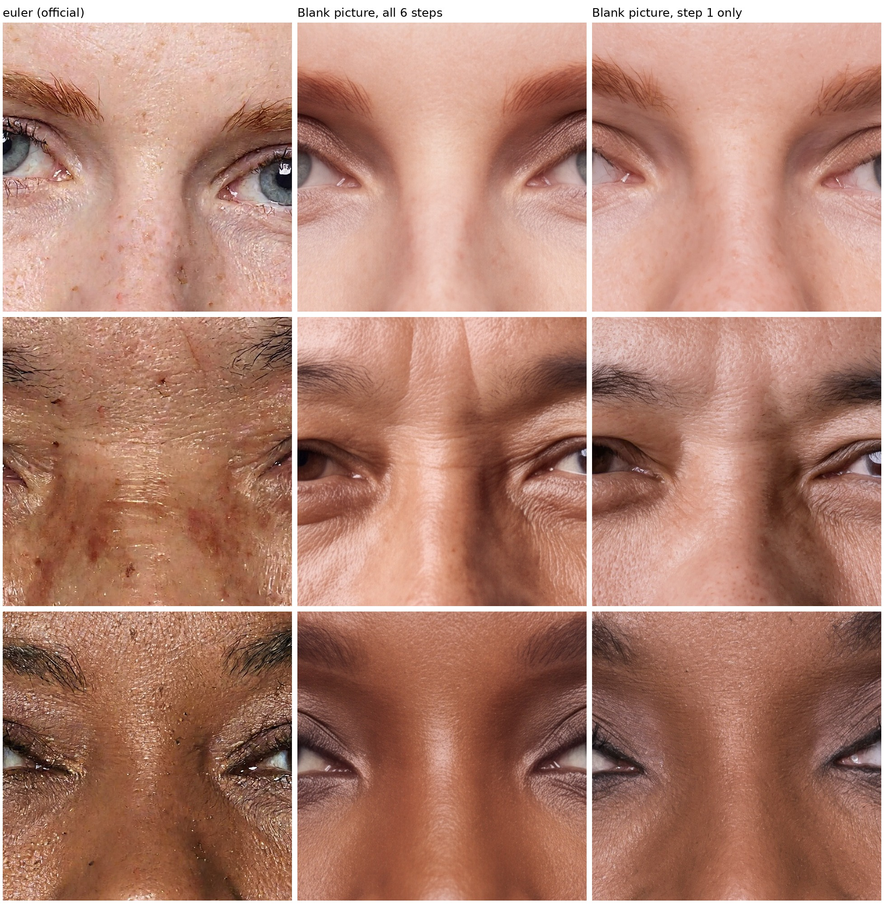
Colour: on these portraits the blank picture did not lower saturation (mean CIELAB chroma 13.4 without it, 14.4 with it), so the calmer colour seen on the sheets above is not confirmed as a general effect.
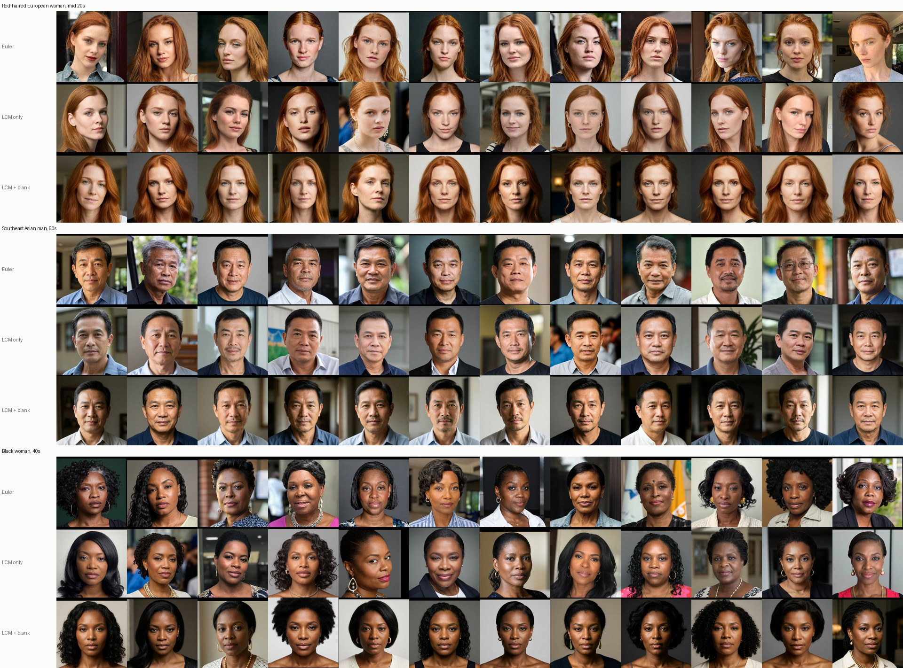
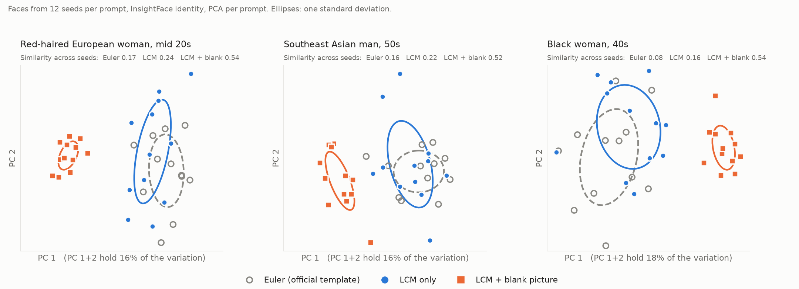
Barry the Gnome
A fourth test subject anyone can reuse: "A photo of Barry the Gnome, a ceramic garden gnome with blue eyes, a red hat and a full white beard, with a belly and a belt, head and shoulders, looking at the camera." InsightFace does poorly on faces that are not realistic, so Barry is compared with whole-picture CLIP similarity instead (higher is narrower). Same 12 seeds.
| Setup | CLIP similarity across seeds | Against LCM only (95% interval) |
|---|---|---|
| euler (official) | 0.877 | -0.004 (-0.039 to +0.031) |
| LCM only | 0.881 | reference |
| LCM + blank picture, all 6 steps | 0.923 | +0.042 (+0.013 to +0.070) |
| LCM + blank picture, step 1 only | 0.909 | +0.029 (-0.005 to +0.061) |
Barry narrows too. With the blank picture on all six steps every seed draws the same close-up on a dark background; without it, and with it for step 1 only, the framing and the setting vary again. In CLIP's units the step 1 setting gives back about a third of the narrowing, and its interval no longer excludes LCM only.
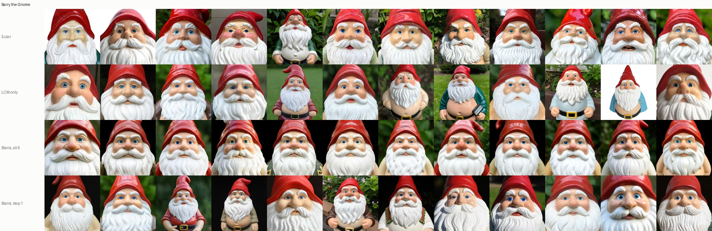
Keeping a seed's person
The fix changes the person a seed draws. To keep that person, run
euler for 1 step and LCM for the other 5 (SplitSigmas at
1, DisableNoise on the LCM part). The person stays and the
worst crunch goes, but the picture is not fully rescued: a salvage, not
the fix. More euler steps keep more crunch.

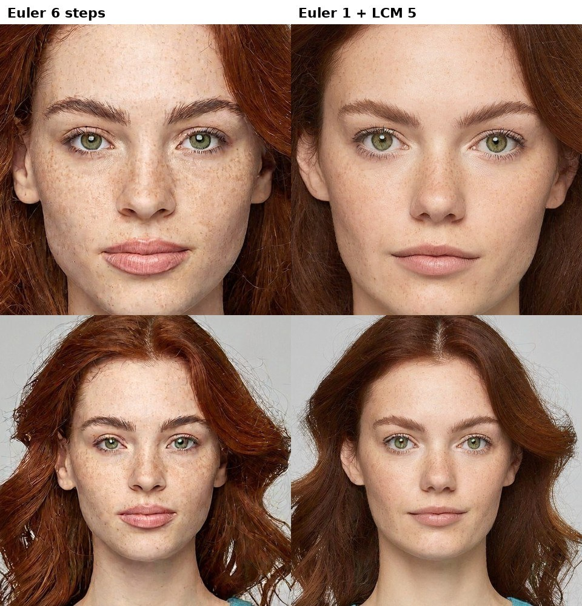
Sheets from a reference picture
When a sheet is drawn from a reference picture, the person comes from that picture, so likeness matters most. Two people, two reference pictures each, four seeds, LCM against euler. Likeness is InsightFace similarity to the reference face, averaged over the six photos of a sheet and the four seeds; higher is closer.
| Reference | LCM | euler (official) |
|---|---|---|
| Woman, reference 1 | 0.64 | 0.60 |
| Woman, reference 2 | 0.69 | 0.66 |
| Man, reference 1 | 0.67 | 0.63 |
| Man, reference 2 | 0.73 | 0.70 |
LCM keeps the person better than euler every time: it scores higher in all 16 pairs of the same reference and seed. The reference picture matters more than the sampler, though: each person's second reference scores clearly higher than the first, with either sampler.
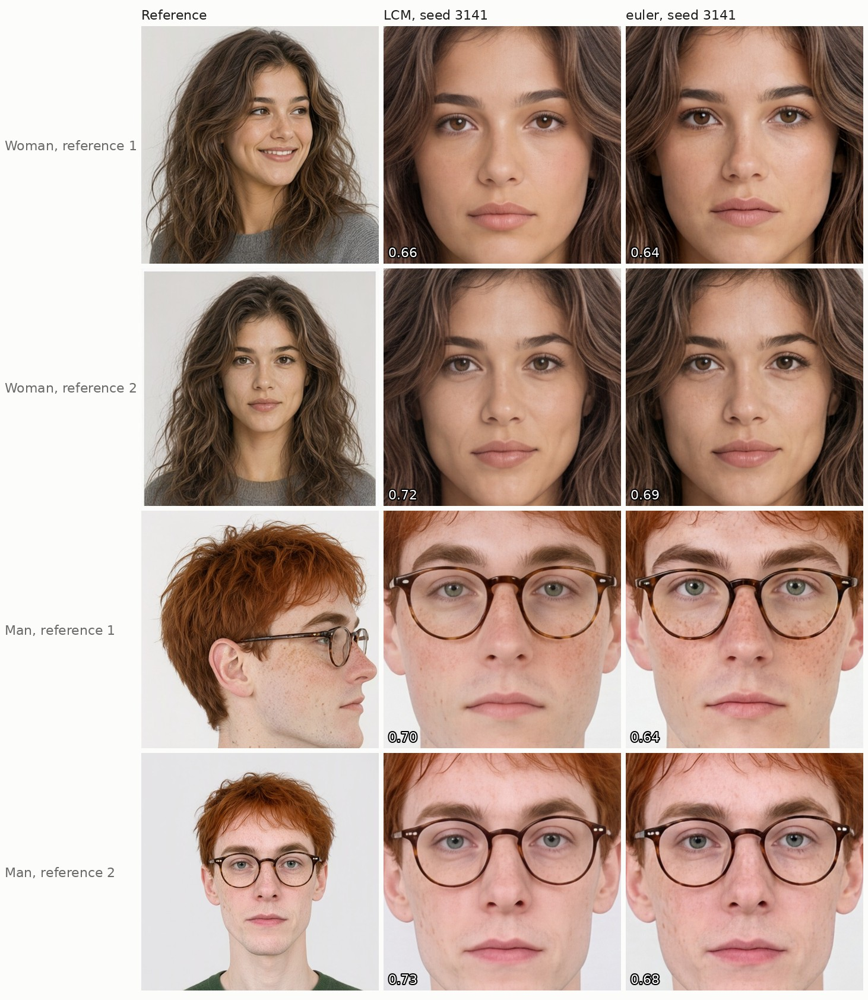
The prompt
-
Numbered panels get drawn. "(1)" to "(6)" in a sheet
prompt appeared as digits in the photos; listing the views without
numbers stopped it.

Same seed: the numbered prompt drew digits into the photos (top); listing the views without numbers did not (bottom). - Describe the photo, not its quality. "Photorealistic" pulls toward a render; camera, light and skin words pull toward a photo.
- Skin. "True-to-life skin" gave airbrushed faces; describing texture fixed that but aged them. The wording that kept realism without the ageing: "real skin with its natural texture and a little shine, a few small marks, no makeup, no beauty filter, nothing airbrushed, smoothed, retouched or sharpened, a touch of sensor noise and a few flyaway hairs."
- Light words work (golden hour, street light, flash, office, overcast, winter, dusk); "early camera phone" and "Polaroid" barely register. "Pores" ages young faces, makeup feminises men, and "softbox" draws the softbox.


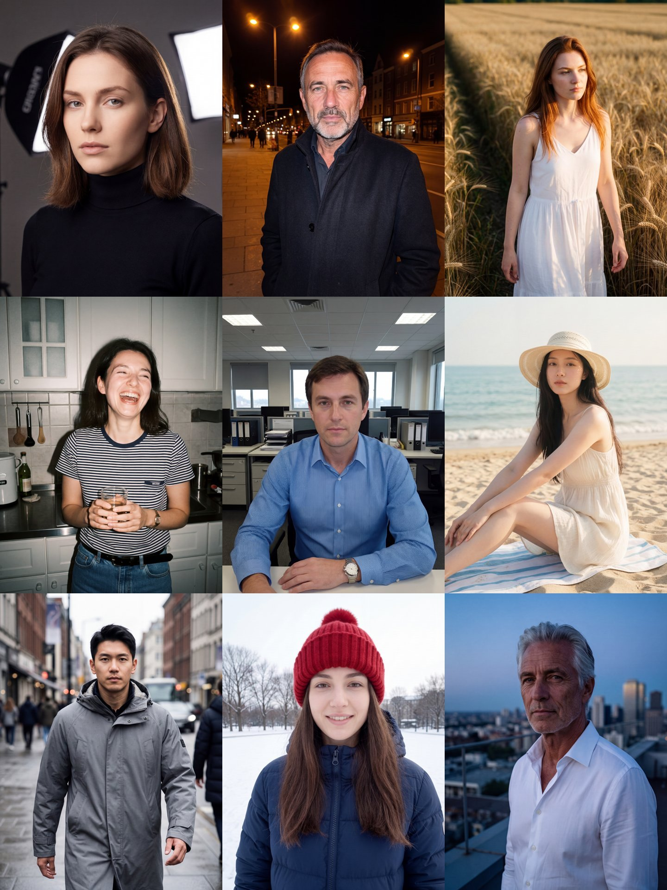
In PixlStash and in plain ComfyUI
PixlStash v2.0.2's MiniMax H3 Image text-to-image and sheet workflows use LCM, with a 32 x 32 blank picture for step 1 where there is no input picture; its inpaint workflow uses LCM too. Its optional Photo look adds camera, light and skin lines at run time, leaving the user's prompt untouched.
Stock-node workflows for plain ComfyUI, using the official model files, are linked at the top of the web version: text-to-image with the fix, and the keep-a-seed variant.
Limits
One or two seeds and two or three people per comparison, mostly portraits, judged by eye except likeness. Not tested: more than 6 steps, other schedulers, and LCM for edits and inpainting.
Credits
- u/LilBrownBebeShoes, for the MiniMax H3 Image 20MP workflow, the starting point.
- Kijai, for the LCM settings (as credited in that post) and the empty-image method in ComfyUI-KJNodes.
- Furkan Gözükara, igorls, PixelAI Labs and vyrekai, for related write-ups and workflows.
- MiniMax, for releasing MiniMax H3 Image as open weights.